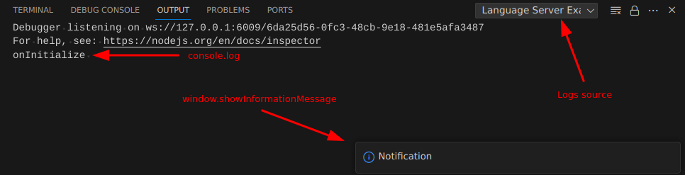

VSCode Language Server Development
Programming languages come with their own semantics and features, and programmers often rely on hints and checkers provided by their Integrated Development Environment (IDE) to speed up development and troubleshoot code. However, implementing every possible semantic feature directly into an IDE for all programming languages would not be optimal. Therefore, the Language Server Protocol (LSP) was created as a layer between the user interface and the IDE. The server provides necessary functionalities often visible when searching symbols or writing function prototypes, etc.
This paper aims to provide a practical approach to developing your first LSP that interacts with both the user and the IDE. I will describe the conventions used in VSCode npm packages for extension development. By the end of this read, you will have a good starting point to implement your own ideas within the event-based environment of the LSP. I will also provide interesting resources for finding examples and describing possibilities you might be seeking on the internet, gathering some examples to implement various functionalities. Here, I've done it all for you!
What is the LSP
The Language Server Protocol (LSP) server is thoroughly described on the official Microsoft webpage. Understanding its intricacies is crucial, but let's focus on the high-level overview.
When a client performs actions like code highlighting or file editing, it often requires advanced features such as autocompletion in languages like C, JavaScript, or Python. To cater to these needs, the LSP acts as an intermediary. It facilitates communication between the client and various language servers, enabling seamless integration of language-specific functionalities into the development environment.
Languages: Methods:
| textDocument/didClose |
JS -------> | textDocument/documentLink |
| textDocument/references |
Python ---> | textDocument/hover | -----> LSP
| textDocument/completion |
C --------> | textDocument/inlayHint |
| textDocument/didOpen |
All available methods are thoroughly described in the official documentation. The documentation outlines various requests and responses in corresponding chapters.
For practical implementation guidance, I found it immensely useful to draw inspiration from the following resources:
It's worth noting that messages can be sent using four different standards:
export declare enum TransportKind {
stdio = 0,
ipc = 1,
pipe = 2,
socket = 3
}
I am going to focus on using the ipc method of transporting messages between the client and LSP.
In Visual Studio Code (VSCode), messages between the client (VSCode) and the language server are typically sent using JSON-RPC (Remote Procedure Call) over the chosen IPC (Inter-Process Communication) mechanism. JSON-RPC is a lightweight remote procedure call protocol utilizing JSON for data serialization.
Messages are formatted as JSON objects containing fields such as jsonrpc, method, params, and id. These fields specify the JSON-RPC version, the method being called or responded to, any parameters associated with the method, and an identifier for the message (typically used for correlating responses with requests). Then, they are serialized and transmitted.
To put this into an example, imagine you are currently editing an open file. The client sends a notification method to our server with the message ID textDocument/didChange, along with corresponding parameters. However, before this happens, the server needs to inform the client that it is capable of handling such a message, which is described as follows:
textDocumentSync: TextDocumentSyncKind.Incremental,
This informs our client that we are capable of handling text document events and to send only changes instead of the full document, as it would be with the option TextDocumentSyncKind.Full.
With this minimal theory in place, we are now prepared to exchange a few logs.
Minimal environment set-up
To start, we need to set up a TypeScript environment. This requires having Node.js installed. To install node:
sudo apt install node
Clone the minimal LSP development environment from the public GitHub repository here.
Once cloned, you'll find the following directories:
.vscode: Contains all necessary shortcuts configuration, enabling you to easily hit 'F5' to start debugging.client: Contains all client-side related operations, responsible for setting up the connection with our LSP.server: Houses our LSP related source files.
After cloning the repository, it's recommended to update the versions of vscode-languageserver in server/package.json and vscode-languageclient in client/package.json.
To prepare the environment for further development, execute npm install. To debug, simply hit F5.
Client set-up
We begin by examining our client-side setup. Here, we need to configure the client settings and establish a connection with the LSP.
The "extension" must cover two functions that will be called by VSCode when enabling our extension: activate and deactivate. We need to provide implementations for these two functions.
The activation method should consist of the following steps: 1. Specify server options: 1. Where is the LSP script located? 2. How do we want to run the server? 3. How do we exchange messages? 2. Set up our client and point it to the server configuration. 3. Register any event handling functions (which will be described later in the chapter about sending custom requests from server to client). 4. Start the client.
During deactivation, we should close all used resources and stop our client session.
Minimal client set-up is showed in GitHub: minimum-viable-vscode-language-server-extension
Server set-up
We are creating the connection object with:
const connection = createConnection(ProposedFeatures.all);
then we need to specify the first event that will occure where the client will establish the connection.
connection.onInitialize((params: InitializeParams) => {
const result: InitializeResult = {
capabilities: {
/* Here we list all methods the server can handle */
},
};
return result;
});
The client will wait for the set of capabilities that our server will handle to send only those messages that we really care about.
Once we specify this event, we can start listening for any incoming connections:
connection.listen();
Minimal server set-up is showed in GitHub: minimum-viable-vscode-language-server-extension
Debugging
The very first thing I tried to do when I started to work with LSP was to display some logs, to better understand the events and parameters that I received. This truly helped me to understand the overall flow of the LSP.
Since we are working with multiple applications running at the same time, I had some trouble finding the correct methods of sending logs and notifications.
Logs form server side

They are going to be visible in the newly opened VSCode window.
Notification
The most visible log is to send a notification to our client from the server side.
connection.window.showInformationMessage("Notification");
Console log
Another practical way of logging information would be to send it to a terminal.
connection.console.log("onInitialize ");
Logs from client side
Default console log
We can use debug terminal to send logs:
console.log("Init!");
They are going to be visible in the "Debug Console" in the window where you started the debugging.
Own console instance
We can create our own custom message stream:
let orange = vscode.window.createOutputChannel("My custom terminal");
orange.appendLine("Log line!");
They are going to be visible in the new opened VSCode window. You need to change the selected terminal as showed on previous screenshot.
Event cooking-book
Events I used and were handy while my development.
Document
Instruct the server about capabilities:
textDocumentSync: TextDocumentSyncKind.Incremental,
To handle document related events first create object for text documents manager, attach established connection and start listening any text document related events.
const documents: TextDocuments<TextDocument> = new TextDocuments(TextDocument);
documents.listen(connection);
onDidChangeContent
Triggered every time when the we edit the file content.
documents.onDidChangeContent((_change) => {
connection.console.log("onDidChangeContent");
}
);
Completion
Instruct server about capabilities:
completionProvider: {
resolveProvider: true,
triggerCharacters: ["["],
}
You can specify in which key the completion list should be showed triggerCharacters.
onCompletion
The list after you hit ctrl + space will be constructed from the array you return.
connection.onCompletion((_textDocumentPosition: CompletionParams): CompletionItem[] => {
connection.console.log("onCompletion");
return [
{ label: 'Label A', insertText: 'text'},
]
});
Links
Instruct server about capabilities:
documentLinkProvider: {
resolveProvider: true
}
Links can be created by specifying the range of characters that are supposed to be interactive. These links are created using onDocumentLinks and can later handled one by one with onDocumentLinkResolve.
onDocumentLinks
Assign ranges of characters to links:
connection.onDocumentLinks((_params) => {
return [
DocumentLink.create(Range.create(1, 1, 1, 2))
];
});
onDocumentLinkResolve
This event will be triggered when user clicks on the link with Ctrl + click
connection.onDocumentLinkResolve((link) => {
connection.console.log("onDocumentLinkResolve");
connection.URI = URI.file("path_to_file.txt").toString();
return link;
});
It is possible to read the current workspaces URI which is passed as parrem in onInitialize event params.workspaceFolders[0].URI.
Custom requests
It is possible to send custom requests or notifications from server to client and other way round.
sendRequest
You can send request from server to client with sendRequest.
const params = {};
connection.sendRequest("customMethod/eventName", params);
In case the request suppose to return some value you can assign it to the variable as from usuall function.
const params = {};
const response = connection.sendRequest("customMethod/eventName", params);
onRequest
To receive custom request on client side you can use onRequest event.
client.onRequest("customMethod/eventName", (params: any) => {
console.log("My custom event!");
const response = { custom: "label" };
return response
});
To return data from completed request just return the object or value as in normal function.